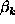
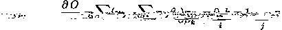

The objective is to find the value of that minimizes

This can be solved by finding the derivative of the objective function with respect to , setting equal to zero and solving the resulting system of linear equations.
Differentiating with respect to  gives

This is better expressed in matrix notation as

where R is the residual vector (nothing to do with the Q-R decomposition!), the Normal Equations.